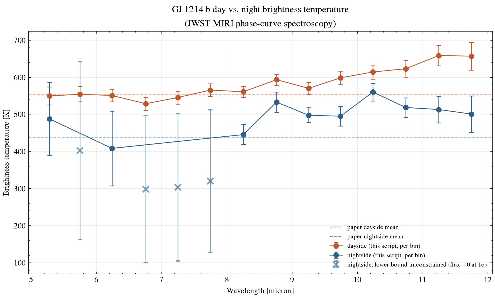

Data source notes
SHA-256, LF-normalised text
e4f20e8a0086292c6abab2c5467d33010e12886b1fe4b33766fc2e40fe319e24Browse 4 versioned evidence files. Table previews simply display stored rows. Consult the project report for the source, processing steps, and inference assumptions.

e4f20e8a0086292c6abab2c5467d33010e12886b1fe4b33766fc2e40fe319e24ae1a9e4e72f91929b4ec907fd0dda3a526d0ff2c95fc9e6ea32d4e6c86fa09b3| quantity | value | unit |
|---|---|---|
| n_wavelength_bins_used | 14 | count |
| n_bins_skipped_nonpositive_flux | 0 | count |
| n_nightside_bins_lower_bound_unconstrained | 4 | count (flux consistent with zero at 1-sigma; lower T bound reported as 0 K, not clipped) |
| weighted_mean_dayside_brightness_temp_this_script | 574.8 +/- 4.9 | K |
92806b185d57d897004a6d27d13b229596ce107ddf70c50d40531dd35c2d8ba13669c28848d6fbf4b2cde7f57359abc1524e4c659da498ef79e31702c76f39d4SHA-256 values verify the stored files. They do not independently validate the scientific analysis. Rebuild this page with python scripts/evidence_catalog.py followed by python scripts/render_evidence_page.py.